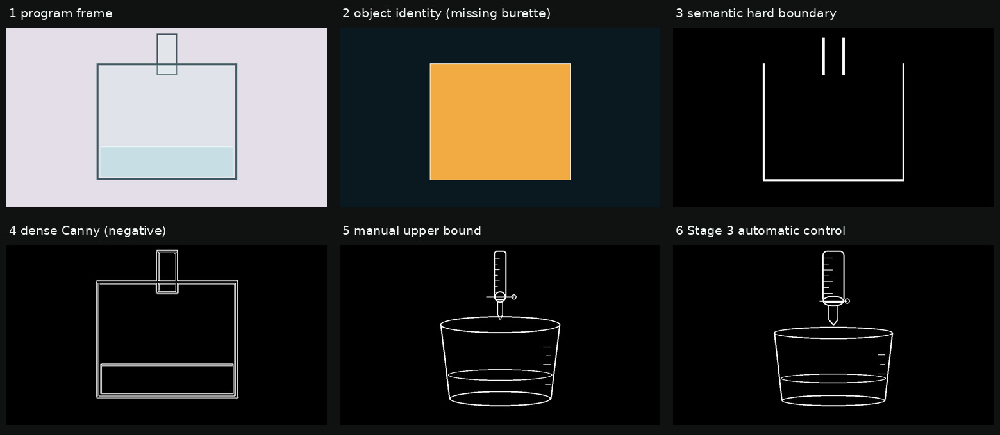
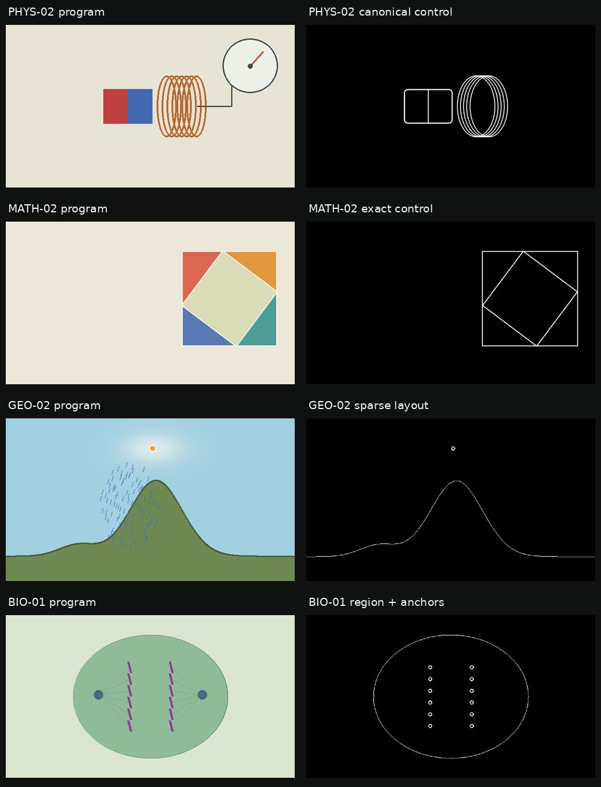
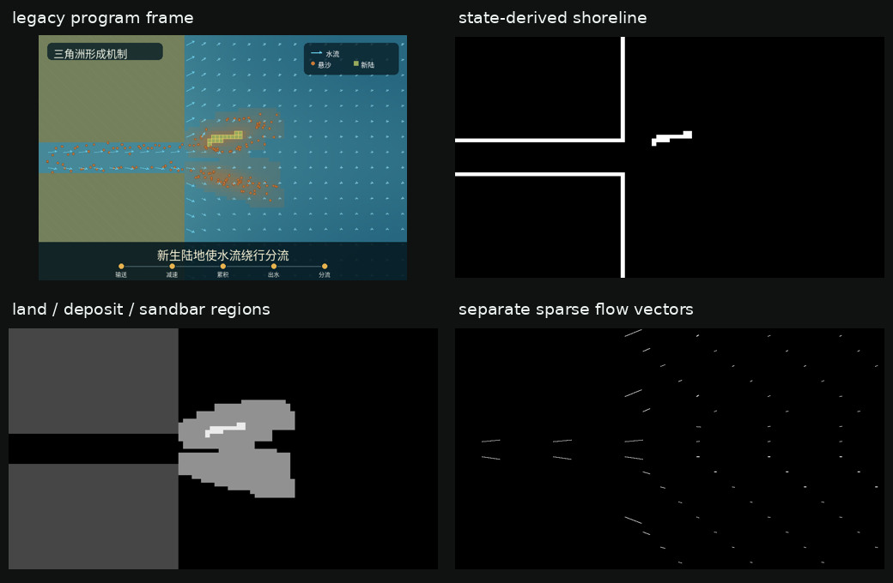

canonicalize
目标：CHEM-01
回归：PHYS-02, MATH-02
烧杯有人工上限却与程序断链；PHYS-02 检查器材库跨学科，MATH-02 检查该路线不会污染精确几何。
本阶段把几何处理固定成三条可复现策略：精确几何原样通过、规范器材按类型重建、 自然与有机场景只保留布局和拓扑。所有控制图都由程序语义生成，没有读取最终好图的几何。

从左到右：程序图 → 对象身份 → 程序硬边界 → dense Canny 负对照 → 人工上限 → Stage 3 自动控制。黑白图不是渲染结果，而是告诉后续 ControlNet 稳定器材在哪里。
第一次预检真的失败了：现有 identity 只有 glass_beaker，
没有 glass_burette。如果直接写几何重建器，滴定管就会消失。本 Loop 没有把失败藏掉，
也没有立刻调用模型。
合同补的是“缺少一个 glass_burette，且它由烧杯上方一对未归属平行硬边界表示”； 没有补最终像素坐标。Normalizer 从 hard_boundary 量出 bbox，typed primitive 库再画规范滴定管。 这解释了 Semantic Normalizer 的真实上下文：它位于旧程序导出与通用几何库之间，只修接口，不负责外观。
| 指标 | 自动路线 | 含义 |
|---|---|---|
| 边缘密度 | 0.020618 | 保持稀疏，不把整张程序图变成线。 |
| 自动线在人工线 12px 邻域内 | 76.8% | 只用于评价接近程度；人工线从未作为自动路线输入。 |
| 人工线在自动线 12px 邻域内 | 79.2% | 差异主要来自杯体比例和滴定管细节，不影响类别/数量/关系门禁。 |
目标：CHEM-01
回归：PHYS-02, MATH-02
烧杯有人工上限却与程序断链；PHYS-02 检查器材库跨学科，MATH-02 检查该路线不会污染精确几何。
目标：MATH-02
回归：PHYS-01, CHEM-01
拼图的点、面积和对象身份不能近似；PHYS-01 检查连续高度场，CHEM-01 检查策略隔离。
目标：GEO-02
回归：BIO-01, PHYS-01
山地与有机细胞不应被粗程序轮廓锁死；只保留区域拓扑、对象锚点和场接口，并回归历史三角洲。

PHYS-02 把粗线圈重建为规范线圈；MATH-02 的三角形 payload 一字节不改； GEO-02 只保留山地边界和空气团锚点，不把云雨标量场硬转成 Canny；BIO-01 保留细胞拓扑与染色体锚点。

历史三角洲尚无 Stage 3 标准 semantic_layers.json，但原程序的 120 行状态仍保存了
land、new_land、沉积厚度、粒子和 flow samples。legacy adapter
直接读取这些数组，分别输出岸线、区域和稀疏流向；没有从写实终帧反推。最终状态检查到
一个连通沙洲和两条绕流路径。
固定入口：.venv/bin/python -m modules.video_model.stage3.phase1
机器可读证据：失败实验 001 · 接受实验 002 · phase1_manifest.json
S3.1 通过。通过的含义仅是： 自动控制来源清楚、三类策略都有跨案例回归、输出可重放；它不表示 SDXL 图片已经变好， 因为本阶段刻意没有运行模型。
自动进入 S3.2：冻结 SDXL 候选矩阵、 seed、ControlNet 强度、G2/G3 选择与 tie-break。下一阶段才会检验自动线稿能否稳定生成 接近视觉目标包的真实场景。